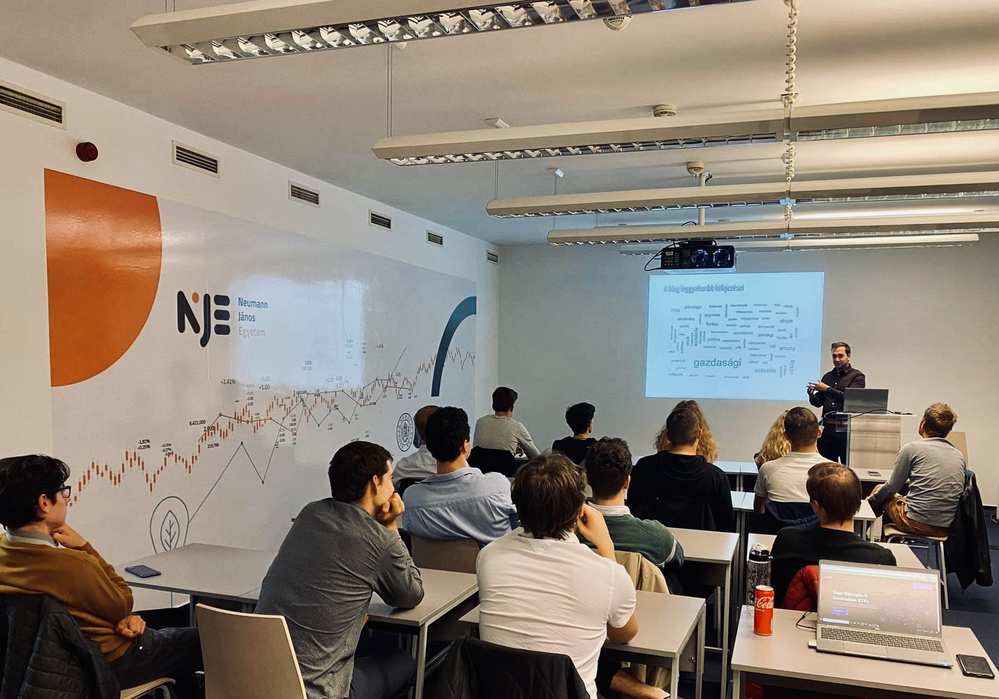

TF-IDF to analyse the Economania blog.
The MNB Institute organized the opening event of the Economania professional workshop, and I also had the opportunity to present the results of text analysis on the blog posts.
My presentation was about the analysis of blog posts, based on TF-IDF indicators. TF-IDF is the frequency of the term (word) adjusted for how rarely it appears in the collection of documents (aggregated to years and authors in this case). This decreases the weight of the commonly used words and highlights the terms related only to that specific year or author.

To carry out the analysis, I collected the individual blog posts myself using the web scraping method and cleaned the data, the code is available at the following link: https://github.com/MarcellGranat/economania-textmining/blob/main/scrape.R